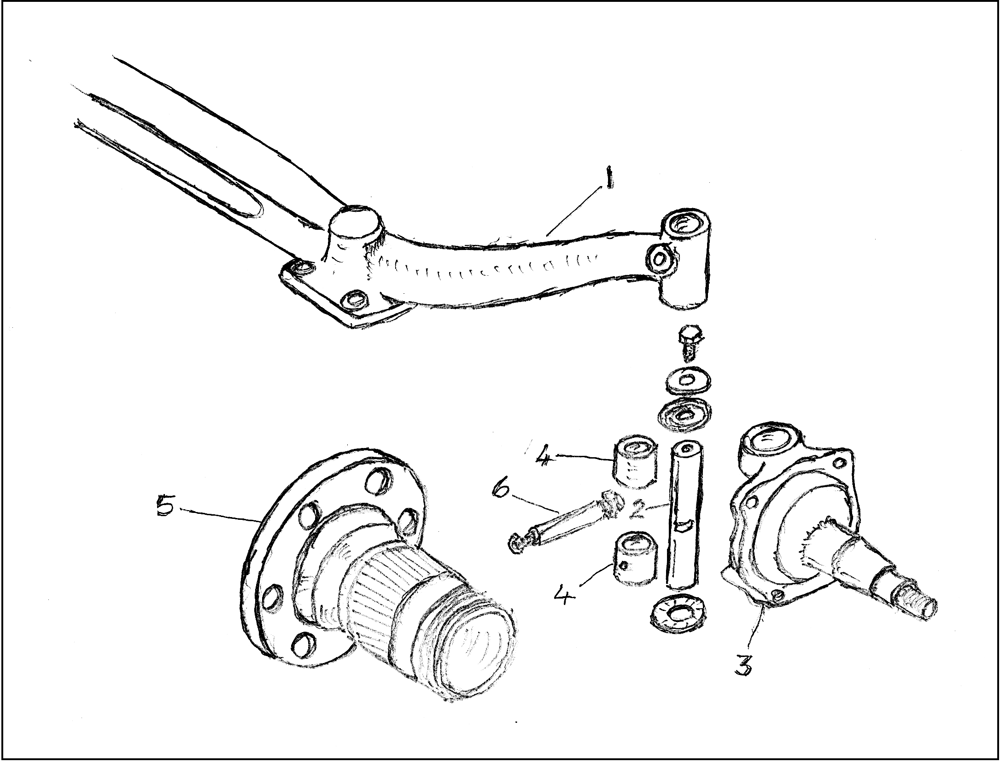
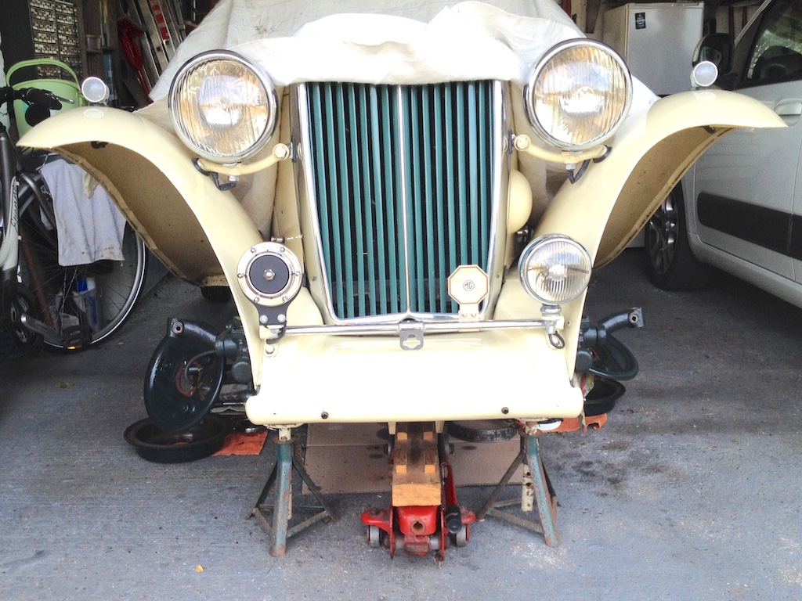
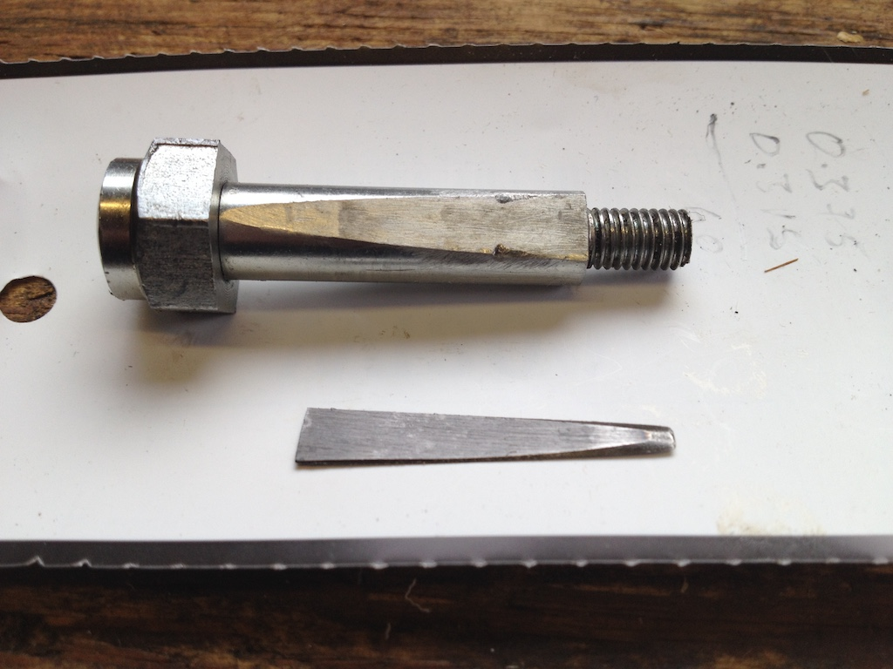

Unnecessary Work
Have you ever done some work that proved not to have been necessary? Or perhaps you spent money on something that you then found you didn't need? I've recently discovered that I've succumbed to both of these! My unnecessary work involved replacing the kingpins on my TC. But I doubt that many of you have a beam axle and leaf springs on the front suspension of your cars. So I'd better just give you a brief overview of how they are arranged.
I've copied the elements of this diagram from one of the parts catalogues, but in it you can see the near-side end of the beam axle (1) with the eye that takes the kingpin. The kingpin (2) passes through the top of the stub axle (3), through the eye of the beam axle and then through the lower part of the stub axle. Those two parts of the stub axle contain bushes (4), because the stub axle rotates as you move the steering wheel. The hub (5) is then pushed on to the spindle of the stub axle and the wheel is attached to the hub.
The bit that I missed out is that the kingpin is 'locked' into the axle by a cotter pin (6), which passes through the horizontal hole in the axle and engages with the kingpin. The kingpin is a tight fit into the axle eye and has a slot cut into it. The cotter pin has a tapered flat section so that, with the two holes in the axle slightly overlapping, the cotter pin, when tapped in from one side, locks the kingpin in place. The cotter pin has a small nut on one end, for tightening the pin in the axle, and a large, round-headed nut on the other, which is part of the steering stop.
 Hopefully you can see how that works in this vertical slice through the stub axle. There is also a bronze thrust washer between the beam axle and the stub axle and steel shims to reduce any vertical movement.
Hopefully you can see how that works in this vertical slice through the stub axle. There is also a bronze thrust washer between the beam axle and the stub axle and steel shims to reduce any vertical movement.
My understanding is that all MG cars, up to and including the TC, had this arrangement with a beam axle. The Y-Type, however, first produced in 1947, and therefore overlapping with TC production, was the first model to be fitted with independent front suspension. This design, which still has a stub axle and the equivalent of a kingpin (called a swivel pin), but no beam axle and with the leaf spring replaced by a coil spring, was then used on the TD, TF, MGA and with a modified version on the MGB.
Now, why did I decide to replace the kingpins on the TC. When I replaced the spindles on the stub axles, back in 2016, I noticed two things. Firstly, the stub axle bushes on one side were clearly different to those on the other side, protruding at the top and bottom. Secondly, the cotter pins were odd and not of the correct type and when I fitted the correct versions, the near-side pin went further through the axle than it should. These observations lead me to the conclusion that odd kingpins had been fitted to the car. The stub axles are sided and they had been put on the wrong sides, so at the time I was more concerned about correcting this and dealing with cracks that were visible at the roots of the spindles. Replacement of the kingpins could wait until later.
Therefore after the 2021 South Downs Run I decided that it would be a good time to replace the kingpins. In 2019 an acquaintance on a T-Series forum had a batch of stub axle bushes made and I had bought four of these in anticipation of the work. So in mid-September I set about removing the stub axles. Angela does say that the TC spends more time on axle stands than it does on the road. She may have a point!
It so happens that another acquaintance on the same T-series forum, and who has nearly completed a 'nuts & bolts' restoration of a TC, had offered to help me push in the bushes and ream them to fit the new kingpins. So with confidence I took my stub axles over to Bognor and we spent the morning removing the old bushes, pressing in the new ones and reaming them so that the new kingpins were a snug fit.
It was when I started re-installing the stub axles that my problems started. Actually the off-side stub axle went on easily. It was the near-side that caused concern. You will recall that the cotter pin on this side went further through the axle than it should. In fact the mechanic who did a safety check (MoT test without the certificate) on the car earlier in the year had commented on it. To my horror, with the new kingpin installed, the cotter pin again went too far through the axle! So it looks as though there was no problem with the original kingpins (apart from the irregular bushes) and I can't see that any modifications have been made to the axle, so it seems that the cotter pin hole has always been slightly out of place, even though that sounds unlikely.
 So what was I to do? As you can see from the drawing, the cotter pin is a bolt with a large nut on one end (which forms part of the steering stop) and a smaller nut on the other, which is used to tighten the pin in the axle. However, rather than just being a cylindrical bolt, it has a flat surface machined on it so that it can engage with the slot in the kingpin. I could ask the person who makes these cotter pins to make one with the flat moved along a little, but that would take time and result in something that might cause confusion in years to come. So I decided to make a shim, a sliver of steel to go between the flat on the cotter pin and the slot in the kingpin. You can see it noted in the drawing and a quick calculation suggested that it needed to be less than 20 thou in thickness.
So what was I to do? As you can see from the drawing, the cotter pin is a bolt with a large nut on one end (which forms part of the steering stop) and a smaller nut on the other, which is used to tighten the pin in the axle. However, rather than just being a cylindrical bolt, it has a flat surface machined on it so that it can engage with the slot in the kingpin. I could ask the person who makes these cotter pins to make one with the flat moved along a little, but that would take time and result in something that might cause confusion in years to come. So I decided to make a shim, a sliver of steel to go between the flat on the cotter pin and the slot in the kingpin. You can see it noted in the drawing and a quick calculation suggested that it needed to be less than 20 thou in thickness.
So I cut the head and thread off a bolt of the same thickness and cut a sliver about ⅛" thick, made a jig to hold it and filed it so that it essentially completed the cotter pin. Then I filed the curved surface until it was a uniform 20 thou thick. In fact, I had to reduce it to 15 thou for it to allow the cotter pin to go into the axle against the kingpin. The photo shows the cotter pin and the shim (although the shim should be rotated through 180 degrees). I then heat treated the shim to harden it. After driving the car for 80 miles, over some pretty rough roads (but aren't they all), I removed the cotter pin and shim to check that they had not been damaged in any way.
As you can imagine, this all took some time. The bad news is that I didn't need to buy new kingpins and do the work to fit them, I could have just made a shim. Although, on the positive side, at least I now know that all the parts are as they should be. I doubt it will be the last time that I do unnecessary work or incur unnecessary expense.
(Written 8th November 2021; published in WSMGOC Main Gear, xxx 2021.)
© David James 2021 Last updated: 8th November 2021